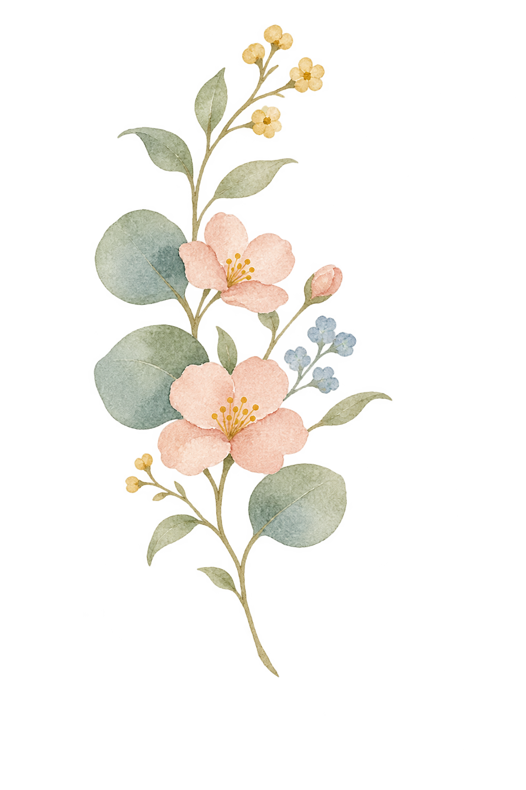
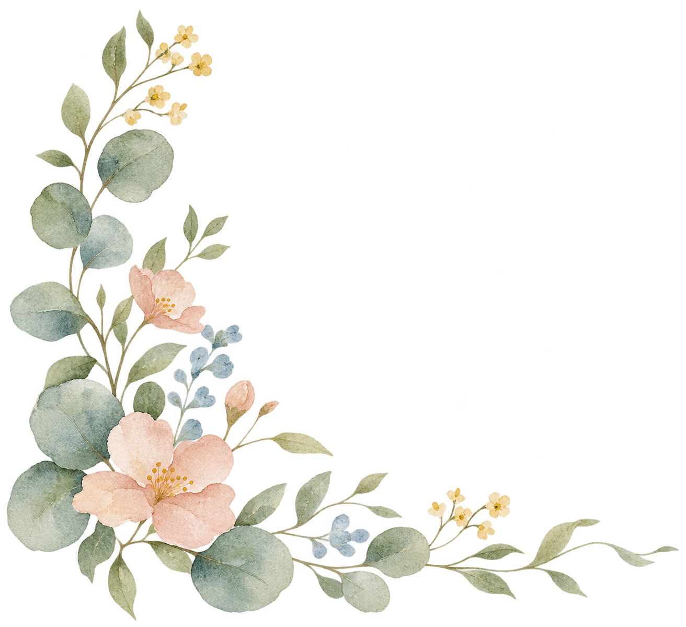
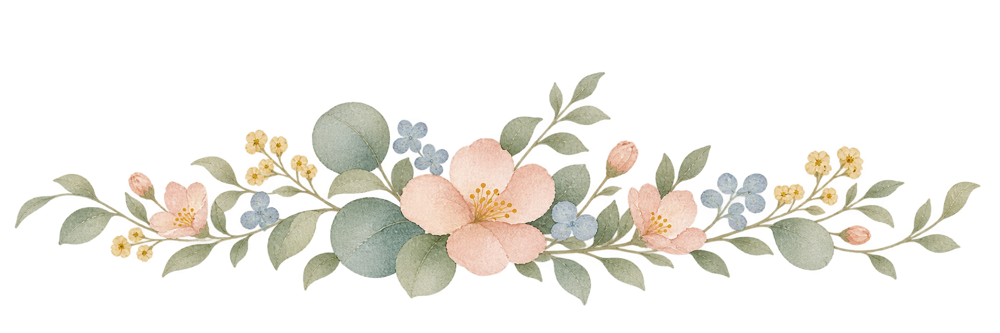
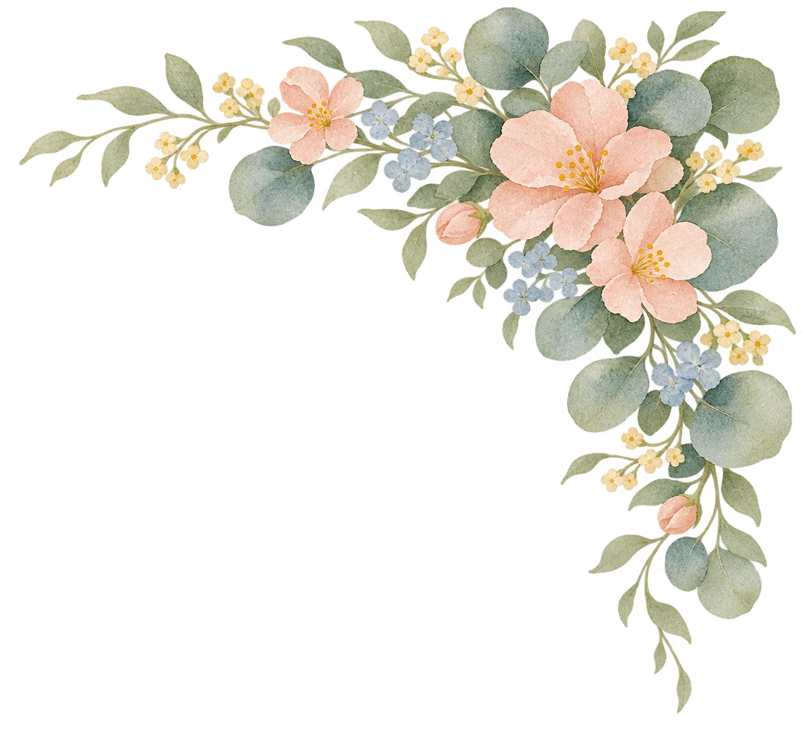
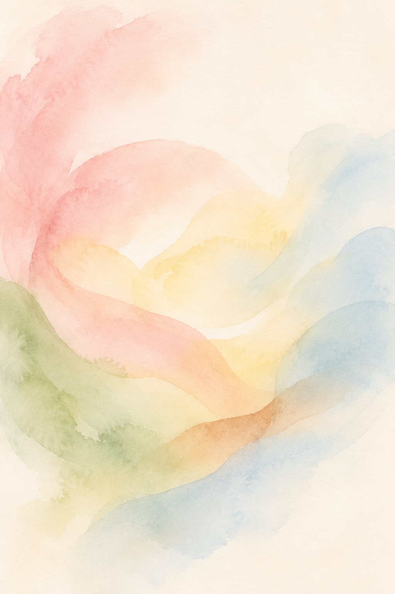

Small sprig
Small accents and narrow spaces.
Download PNGA calm, personal identity for birth support. Soft watercolor, warm brown, and enough breathing room to let real people lead.
Creative direction proposal • November 2026
Keep the heart of the original watercolor identity. Pair it with a clean lowercase wordmark and straightforward typography.
BIRTH SERVICES
BIRTH SERVICES
Primary name: Precious Package. Descriptor: Birth Services. These are proposed wordmarks, not a reconstruction of the original illustrated logo. The supplied SVGs use Arial for broad compatibility; keep the lettering in this layout. Leave at least the height of the “p” around the mark. Minimum digital width: 220px for the full lockup. Use the PP mark for small avatars.
Ivory carries the page. Cocoa carries the words. The watercolor colors add small moments of warmth.
#FAF7F0#806354#A66E55#E6BBB7#B9D4DF#ABB99D#EBD795Aim for roughly 70% ivory, 20% cocoa and warm photography, and 10% watercolor accents. This is a guide, not a quota.
Use cocoa text on ivory. Use ivory on cocoa. Reserve the pastel swatches for accents rather than body-text backgrounds. Keep pastel text off white. Clay is an accent, not a body-text color.
Let the botanical artwork bring the watercolor hues together. Keep large color fills to one or two hues per composition. No purple, hard rainbow gradients, dense patterns, or default pink-and-blue gender coding.
Manrope / Headings / 400–500
DM Sans / Body / 400–600
Space for your questions. Support that starts with listening. A conversation about what matters to you.
Headings: 48–72px desktop, 36–44px mobile, line height 1.1–1.2. Body: 16–18px, line height 1.6. Buttons: 14–16px, medium weight. Both families are available through Google Fonts under the SIL Open Font License. Use sentence case and short paragraphs.
Let the flowers frame the page. Carry their soft color along section edges, with clear space around the words.
Choose natural expressions, warm brown skin tones, soft daylight, and believable moments of connection. Show people as themselves, with consent.
Use simple rectangular photographs with a small corner radius. No window-shaped crops, arches, floating circles, or tiled background motifs.
The included abstract watercolor and botanical are AI-generated brand artwork. Use abstract art for the website’s main visual; any future client photography should be approved and used with consent. The Instagram’s existing illustrated mother-and-baby logo remains a reference; its original source file has not been supplied.
Three new arrangements, painted to match the original. Transparent PNGs for websites, stationery, and social posts.

Small accents and narrow spaces.
Download PNG
Footers, invitations, and section dividers.
Download PNG
Hero edges, covers, and larger compositions.
Download PNGA calm place to begin the conversation.

BIRTH SERVICES
Evelyn
Birth support
Print card example. Add verified contact information only. For print, preserve a generous margin, export artwork at 300 dpi, and use your printer’s bleed and color-profile requirements. These examples show visual treatment, not confirmed services or a live booking flow.
Speak like a thoughtful person who is comfortable listening. Warm, steady, direct. Encourage questions and preserve the client’s agency.
Keep the focus on birth support until the service scope is confirmed. Avoid promises about outcomes, invented credentials, testimonials, pricing, or availability.
Skip “perfect birth,” “fearless mama,” “your body was made for this,” and spiritual language that assumes everyone shares the same beliefs.
The downloadable kit includes this guide, editable SVG wordmarks, a PP avatar, watercolor artwork, abstract watercolor artwork, CSS variables, and machine-readable color tokens. Wordmark SVG lettering uses an installed Arial fallback and remains editable text.
First edition for review. The proposed kit draws on the public Precious Package Instagram palette; it does not replace or claim ownership of the original logo. All sample copy is provisional. Assets supplied here are RGB. Keep a separate print export when a printer requests CMYK.